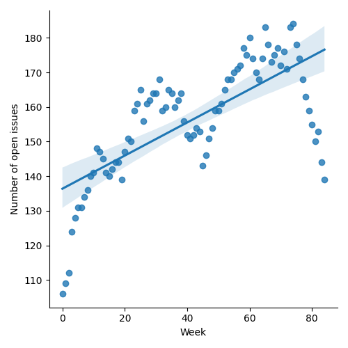
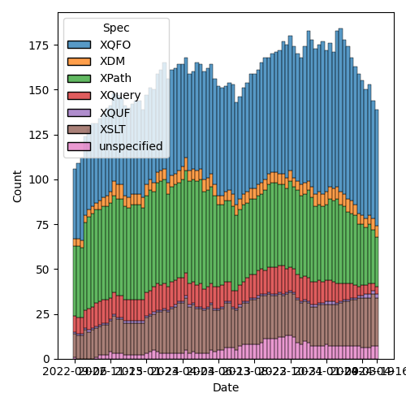
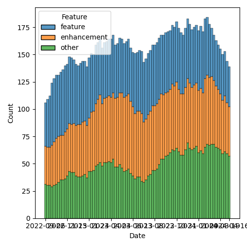

QT4 CG Meeting 074 Minutes 2024-04-23
Table of Contents
- Minutes
- Summary of new and continuing actions
[0/5] - 1. Administrivia
- 2. Technical Agenda
- 3. Any other business
- 4. Adjourned
Meeting index / QT4CG.org / Dashboard / GH Issues / GH Pull Requests
Minutes
Approved at meeting 075 on 30 April 2024.
Summary of new and continuing actions [0/5]
[ ]QT4CG-063-06: MK to consider refactoring the declare item type syntax to something like declare record[ ]QT4CG-071-06: NW to clarify the cases that are distinguished by the leading empty string in path segments[ ]QT4CG-072-03: NW to clarify the round-tripping of URIs[ ]QT4CG-073-01: NW to proceed with the records/options proposal and make a PR.[ ]QT4CG-074-01: MK to remove default values from variadic arguments[ ]QT4CG-074-02: DN to create an issue about allowing function arguments to have default values[ ]QT4CG-074-03: MK to add variadic functions to the XSLT specification
1. Administrivia
1.1. Roll call [11/14]
Regrets: JLY.
[X]Reece Dunn (RD)[X]Sasha Firsov (SF)[X]Christian Grün (CG)[X]Joel Kalvesmaki (JK)[X]Michael Kay (MK)[X]Juri Leino (JLO)[ ]John Lumley (JLY)[X]Dimitre Novatchev (DN)[X]Wendell Piez (WP)[X]Ed Porter (EP)[ ]Liam Quin (LQ)[ ]Adam Retter (AR)[X]C. M. Sperberg-McQueen (MSM)[X]Norm Tovey-Walsh (NW). Scribe. Chair.
1.2. Accept the agenda
Proposal: Accept the agenda.
Accepted.
1.2.1. Status so far…

Figure 1: “Burn down” chart on open issues

Figure 2: Open issues by specification

Figure 3: Open issues by type
1.3. Approve minutes of the previous meeting
Proposal: Accept the minutes of the previous meeting.
Accepted.
1.4. Next meeting
The next meeting is scheduled for Tuesday, 30 April 2024.
JLO gives regrets.
1.5. Review of open action items [1/5]
[ ]QT4CG-063-06: MK to consider refactoring the declare item type syntax to something like declare record[ ]QT4CG-071-06: NW to clarify the cases that are distinguished by the leading empty string in path segments[ ]QT4CG-072-03: NW to clarify the round-tripping of URIs[X]QT4CG-072-04: DN to raise an issue about having a function to test if a collation URI is supported[ ]QT4CG-073-01: NW to proceed with the records/options proposal and make a PR.
1.6. Review of open pull requests and issues
1.6.1. Merge without discussion
The following PRs are editorial, small, or otherwise appeared to be uncontroversial when the agenda was prepared. The chairs propose that these can be merged without discussion. If you think discussion is necessary, please say so.
- PR #1164: 1155 Consistency of glossaries
Proposal: merge without discussion.
Accepted.
1.6.2. Close without action
It has been proposed that the following issues be closed without action. If you think discussion is necessary, please say so.
- Issue #235: Add multiple=true() option to fn:parse-json and fn:json-doc
Proposal: close with no further action.
Accepted.
1.6.3. Substantive PRs
The following substantive PRs were open when this agenda was prepared.
- PR #1163: 1159 Add filter expressions for maps and arrays
- PR #1157: 1135 Correction to definition of focus functions
- PR #1148: 1143 Coercion rules: handle choice types before atomization
- PR #1137: 161 Variadic functions
- PR #1125: 1094 Enhanced lookup expressions
- PR #1117: 1116 Add options param to unparsed-text
- PR #1108: 566-partial Describe a less aggressive %-encoding for fn:build-uri
- PR #1098: 566-partial Editorial improvements for parse-uri
- PR #1087: 1086 Editorial changes to array:values
- PR #1068: 73 fn:graphemes
- PR #1062: 150bis - revised proposal for fn:ranks
- PR #1027: 150 fn:ranks
1.6.4. Proposed for V4.0
The following issues are labled “proposed for V4.0”.
- Issue #1069: fn:ucd
- Issue #982: Add position argument to scan-left and scan-right
- Issue #938: Canonical serialization
- Issue #934: String comparison in deep-equal
- Issue #910: Introduce a Kollection object with functions that operate on all types of items that can be containers of unlimited number of "members"
- Issue #908: Function identity: documentation, nondeterminism
- Issue #882: fn:chain or fn:compose
- Issue #850: fn:parse-html: Finalization
- Issue #716: Generators in XPath
- Issue #689: fn:stack-trace: keep, drop, replace with $err:stack-trace ?
- Issue #657: User-defined functions in main modules without `local` prefix
- Issue #583: array:replace(), etc
- Issue #557: fn:unparsed-binary: accessing and manipulating binary types
- Issue #150: fn:ranks: Produce all ranks in applying a function on the items of a sequence
- Issue #31: Extend FLWOR expressions to maps
2. Technical Agenda
2.1. PR #1163: 1159 Add filter expressions for maps and arrays
See PR #1163
MK reviews the proposal.
- MK: This is driven by the fact that we generalized context node to context item.
- … The filter must be a boolean, it doesn’t use the EBV.
- … This means it isn’t confused with positional selection.
- … You can use
position()andlast()
- RD: I’d prefer it if the
?[wasn’t a single token. It could be confusing for users and you might want to put whitespace to format the expression, for example putting then[on a newline. - DN: I like this, but I take the opposition position from RD. I think
allowing whitespace or comments between the characters would increase
the possibility of error.
- … I’m a little bit concerned that we have too many “ideograms” in the syntax. The possibility of accidental errors are increasing.
- SF: I think the use of
keyandvaluelimits the options for accessing earlier keys in the scope. It would be nice to allow additional syntax to allow you to explicitly say the key and value have a particular name. - MK: You can do that with the more verbose syntax using map or array
functions. Part of the general culture of the XPath language
includes the notion of overriding scopes (consider
.). - SF: I’m talking about making extending it later on.
- CG: I like the proposal; I’d certainly use it. I know that some folks will think it’s too much syntactic sugar.
- RD: On the DN’s point, we already have “?*” that can be separated by whitespace, so I don’t see how that’s different form “?[“. I wonder if makes sense to move this into a lookup section. That would mean you could use this on the “??” operator.
- MK: That’s one reason why I didn’t do it there. The semantics become
quite complicated doing it there!
- … One reason I didn’t integrate it into lookup expressions is that it does’t do flattening the way lookup expressions do.
- CG: Another remark that I’ve already made in the comments is that in many places we’re trying to align arrays and maps, but we’re doing something different here.
- MK: We tried to make arrays and maps as consistent as we can, given that they’re different.
- RD: Wouldn’t this allow with the for/member discussions? That’s a kind of symmetry.
- MK: One way you could do it is to try treat an array as being a map with integer keys. But when you look at what people would have to write it’s far less convenient.
- RD: Or if you flattened the map into singleton maps, that makes access difficult.
Some discussion of how the feature differs from sequences; it’s about the fact that arrays can have items that don’t have single items in them.
Straw poll: “?[“ as a single token or two tokens?
Single token: 4 Two tokens: 2
I think single tokens wins.
Proposal: accept the PR.
Accepted.
2.2. PR #1157: 1135 Correction to definition of focus functions
See PR #1157
- MK: This is relatively minor.
- … This fixes the bug with narrative prose.
Proposal: accept the PR.
Accepted.
2.3. PR #1148: 1143 Coercion rules: handle choice types before atomization
See PR #1148
Not ready for review. Something has gone wrong in the editing.
2.4. PR #1137: 161 Variadic functions
See PR #1137
- MK: This proposal takes a mininalist approach. It generalizes what
the
concatfunction does and applies them to other functions. A lot of the discussion in the issue was about more comprehensive options. This just fixes the fact thatconcatstands out like a sore thumb.- … Having said all that, there’s an issue with
concatin backwards compatibility mode that I couldn’t sort out in a fully general way!
- … Having said all that, there’s an issue with
- MK: It changes
concatto be one of these variadic functions, but most of the technical changes are in the expressions. - MK: I’ve reorganized the static context section a bit.
- … Function declarations can now be declared to be
variadic
- … Function declarations can now be declared to be
MK reviews the description in 4.3 Variadic functions
- DN: Not directly related, but I understand that function items can’t be variadic. But in our current specification, do we allow arguments of function items to have default values?
- MK: No. I think that’s fairly orthogonal. We could potentially do that.
- MSM: I’m confused by MK’s answer to that question. I seem to remember a proposal that provided for that.
- MK: That’s only on static function calls, not dynamic ones.
- RD: Did you talk about default values? I see that
concatuses it.
Some discussion of what happens when you call a variadic function that has a default that isn’t the empty sequence.
- MK: If the default wasn’t an empty sequence, there’d be some
confusion there. If the occurrence is
*, we could insist that it be the empty sequence. - DN: I was going to say that it seems logical not to allow defaults for variadic arguments. That would eliminate the problem.
- RD: 👍
ACTION: QT4CG-074-01: MK to remove default values from variadic arguments
ACTION: QT4CG-074-02: DN to create an issue about allowing function arguments to have default values
ACTION: QT4CG-074-03: MK to add variadic functions to the XSLT specification
2.5. PR #1125: 1094 Enhanced lookup expressions
See PR #1125
- MK: This PR is attempting to address the problem of flattening.
- … It extends the syntax of lookup expressions to add a modifier before the key specifier. It specifies pairs, keys, values, or items. Items gives the current behavior and that’s the default.
- … This PR also adds the type qualifier. It solves the previous issue related to ambiguity around “?” by putting the sequence type in parenthesis.
- … The type qualifier returns only items that match the specified type.
MK reviews examples from the specification.
- MK: This is very symmetric between arrays and maps.
- RD: With the type specifier syntax, do we want to align the keyword with the item type declaration?
- MK: It’s a sequence type not an item type.
Some discussion of item type versus sequence type.
- DN: It seems that using
pairsorkeysfor arrays is not very useful. Also, for maps, usingpairsis the natural approach. Maybe the list of modifiers can be shortened? - MK: You could call it
valuesfor arrays andpairsfor maps. - DN: Pairs on an array gives a very artificial view of an array.
- MK: In many ways, it’s driven by orthogonality: apply all the features for all the data types.
- CG: I think orthogonality is a good thing here. Once we align the function sets with maps and arrays, we may get even more synergy.
- RD: The values and keys accessors are available in other languages.
- DN: I heard what was said about orthogonality. Maybe I agree.
Probably it would be more precise to say
membersrather thanpairs. We already talk about members in other places. - MK: Yes. We don’t have “members” for maps, we have “entries”. There’s a question about whether we could introduce better terminology.
- DN: I wouldn’t object to renaming “entries” to “members” for maps.
- MK: Or just “entries”.
- DN: For arrays, I’m not so sure.
- MK: It would effect a lot of function naming.
- JK: I support values as it stands. It’s a nice complement to pairs and keys. I think many programmers will find that familiar. I also like pairs because it’s not tied to either maps or arrays.
- SF: Usually “members” is associated with object-oriented programming, so I think other names are more suitable.
- DN: I don’t think members are confusing in this case.
Proposal: accept this PR
Accepted.
3. Any other business
Who’s planning to be in Prague? MK, JLO, EP, SF, NW.